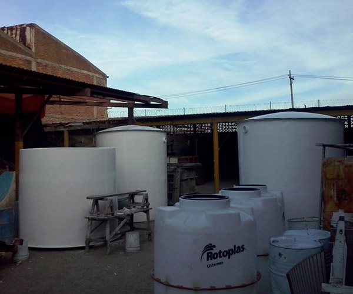

Principal
Quienes somos
Productos
Contacto
Productos Acuicolas
Cosechador de Larvas
Cosechador de Larvas
Tanque Biofiltro para aguas residuales

Tanque Biofiltro para aguas residuales
Tanque Biofiltro para aguas residuales
Tanque Biofiltro para aguas residuales
Panga para alimentacion
Panga de uso
multipe
Panga para cosecha
Panga para cosecha
Panga para cosecha
Tanque para artemia
Tanque para cria larval
Tanque de aclimatacion